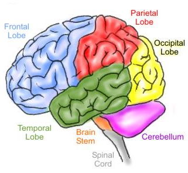

Motivation

Use of Automated Reasoning Software
- Not standalone tools
- Embedded in more complex reasonin systems
- Examples: NASA's CPS, SRI's BioDeducta, Josef's MaLARea
Data Interfaces
- Logical data (TPTP language)
- Status values (SZS ontologies)
Status Quo
- Wide range of quality, quantity, and meaning
- Inaccurate, misleading ... precise, detailed
The SZS Solution
- Meaningful and precise status values
- Standard presentation of values